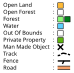

About
What is Orienteering?
Orienteering is a sport were the goal is to navigate to checkpoints in the quickest most efficient way. There are two main types of orienteering: Set Course and Rogaine
Set Course:
Set course is generally what is referred to when someone talks about orienteering. With a set course you are given a map with controls listed in an order, and you have to get to all of them in the correct order, and in the shortest period of time. There are generally four difficulty's of course: White being easiest, then yellow, orange and red.
Rogaine:
Rogaine's are different to set courses, because all controls are optional. This makes it easier than a set course as missing a control isn't a big deal. Compedetitors are given a map with lots of scattered controls (usually 30) and your goal is to get as many as possible in the given time limit (usually 1 hour). If two or more people tie on points, the person with the shortest time wins.
Getting Started
Here are some information for beginners:
Map Reading

The most important part of reading a map is knowing the symbols and colours. The most important colours to know is yellow, white, and green. The darker the green, the thicker the bush. Blue is also up there, with any blue feature always being something to do with water. A black cross is quite commen, symbolising a man made object, such as a park bench or rubbish bin. When going between controls it is often helpfull to follow roads, paths or fences.
Using Compass
Compass are really usefull when map reading. To use one, align your north line(the long straight blue ones) parallel to needle on your compass, so that the top of your map is facing the same direction as the red north side of your compass. This ensures, that the direction your plan to go on the map, is the same direction in real life. Without it, it is easy to get confused and disorintated.
What To Do When Lost
Getting lost happens all the time, and it is iomportant to know how to get unlost. Start by looking around your location, for any distintive features e.g. a large hill, water tank, or an track junction. Then try and find those big features on the map. If that doesn't work try backtracking the way you came, till you are somewhere you know. If all else fails, try walking on till you find a distinct feature, or use the saftey bering on the map.
OBOP Events
The local club, Orienteering Bay Of Plenty (OBOP), runs multiple event series, available for all ages and abilities. Here is a list of the big ones.
Summer Nav:
This is an rogaine series of six events, usually running from February to March. They are on weekdays and start from around 4:30. The events last for 1 hour an are good for all ages
Night Nav:
This is an rogaine series of three events, usually sometime in June. Like their name suggests, these events are held at night. They have a mass start, and last for an hour, with a sausage sizzle at the end with gold coin donations. This is probably better for the more experenced orienteers, as darkness can be very disorientating
Great Forest Rogaine
While not an event series, the GFR is the biggest orienteering event in the Bay Of Plenty. It has multiple catogory, with both a 3 hour and 6 hour option on both foot and bike. This team even event has prizes at the end for the winners of each catogory.